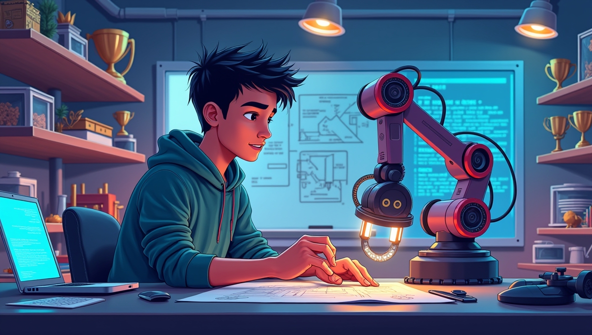

There’s a certain thrill in turning an idea into something real — wires, code, motors, and all. For as long as I can remember, I’ve been obsessed with building things that move, sense, and even think. But robotics isn’t just my passion — it’s my language, my playground, and my classroom.
Welcome inside the mind of a maker — where failure sparks curiosity, competitions fuel adrenaline, and every project teaches more than any textbook ever could.
It started with simple circuits and a lot of curiosity. I was that kid who’d rather open up a toy to see how it worked than play with it. I still remember the first time I made an LED blink — it felt like magic. But it wasn’t long before blinking lights turned into line-following bots, sensor-based machines, and autonomous rovers.
Somewhere between solder burns and late-night debugging sessions, I realized — this is what I love. This is who I am.
Robotics isn’t just about building machines — it’s about building yourself. I’ve had the privilege of competing in 20+ national and international robotics competitions, from the high-energy arenas of IIT Bombay’s Techfest to the intense international challenges of Celesta IIT Patna, where my team proudly brought home the title.
Each event taught me something new:
Win or lose, every robot battle sharpened my mind and strengthened my resolve.
At some point, building robots wasn’t enough. I wanted others — especially young minds — to experience that spark too. That’s how I stepped into the role of trainer and mentor.
Through The BotMinds Robotics Team and EShikshalaya, I began conducting robotics and coding workshops, school visits, and training programs. Watching students see their first robot move? That’s a moment no trophy can match.
A good maker doesn’t just build things — they build others too.
One of the most meaningful chapters of my journey has been Project Udaan — a mission to use engineering for real-world impact. The goal? To develop educational tools and robotic kits that are affordable, open-source, and fun for school students in Nepal.
From designing custom Arduino shields to creating simplified learning guides, Udaan isn’t just a project — it’s a movement. We’re not just teaching robotics; we’re igniting dreams.
If something breaks — don’t fear it, explore it. Every mistake is a stepping stone to mastery.
My proudest victories were never solo — they were earned with passionate, like-minded teammates who shared the same vision.
Teaching what you’ve learned not only helps others, it reinforces your own growth.
Academic results are great — but what you build, share, and solve is what truly defines your skills.
Whether building with scrap parts or leading a robotics team, never forget why you started.
From blinking LEDs to mentoring young innovators, the path of a maker has taken me places I never imagined. With AI, space tech, and advanced robotics on the rise, there’s so much more to build and explore.
If you’re reading this and wondering where to begin, here’s my advice:
Start with your curiosity. Feed it with action. Share it with others. And never stop making.
Because inside every maker’s mind is a world waiting to be built.
 ← Back to Blogs